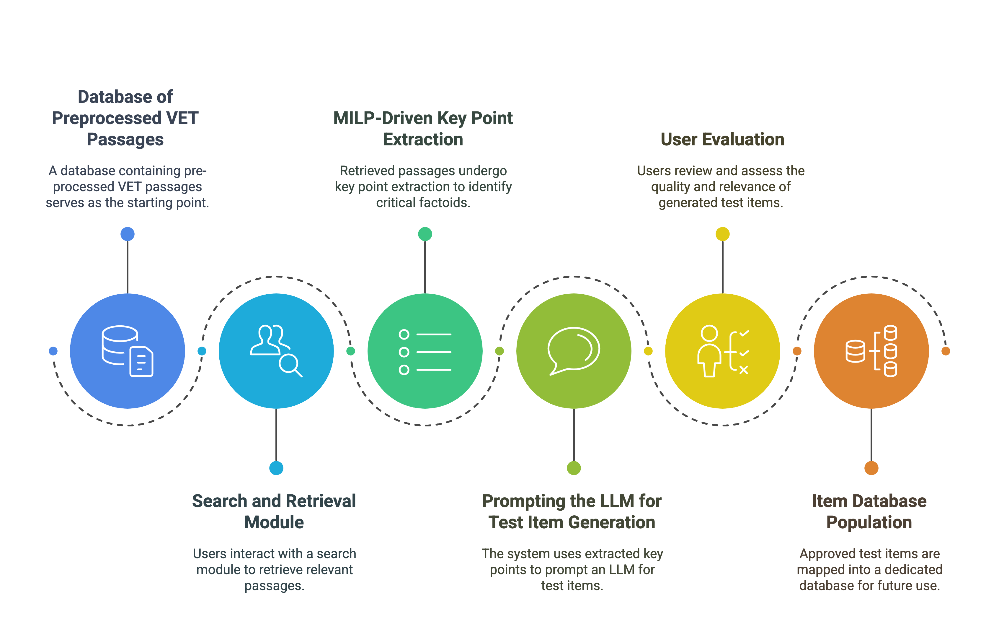

Exam construction can be a time-consuming process, particularly in vocational education and training (VET) contexts where subject matter experts must repeatedly craft and update large numbers of domain-specific questions. By combining the power of large language models (LLMs) with retrieval-augmented generation, EdTec-ItemGen ensures that new items are both contextually aligned to the curricular materials and capable of covering key domain concepts.
The core innovation lies in our novel key point extraction technique, which relies on a Mixed-Integer Linear Programming (MILP) approach to extract critical factoids from any relevant text passages. By synthesizing and summarizing the key information, EdTec-ItemGen guides LLMs to focus on the most salient points, thereby reducing hallucinations and boosting the quality of generated items. This approach aligns with recent trends in retrieval-augmented generation, where external knowledge sources complement an LLM's built-in reasoning.
Through TREC-RAG style evaluations, the paper demonstrates an 8% increase in essential information coverage, as well as notable gains in grammatical quality and readability. By comparing a pipeline without explicit key point extraction versus our MILP-driven approach, the results confirm that carefully distilled prompts can greatly enhance overall item coverage of key facts. This ensures that the generated content remains firmly anchored in authoritative curriculum passages.
EdTec-ItemGen's demonstration highlights how educators can rapidly generate and refine test items, collaborate on finalizing question sets, and seamlessly integrate newly created items into their existing exam repositories. As a forward-looking solution, it addresses both the immediate needs of VET providers and points toward broader applications, such as generating domain-specific items in higher education and professional certification settings.
The high-level workflow below illustrates how EdTec-ItemGen transforms domain-specific texts into fully developed test items. Key steps include retrieving relevant VET passages, extracting crucial information via MILP-driven key point extraction, guiding the generation of new items via prompts, and then evaluating and storing approved items in a dedicated repository. Float the image to the right, like in a book

Bullet list explaining each step in the image